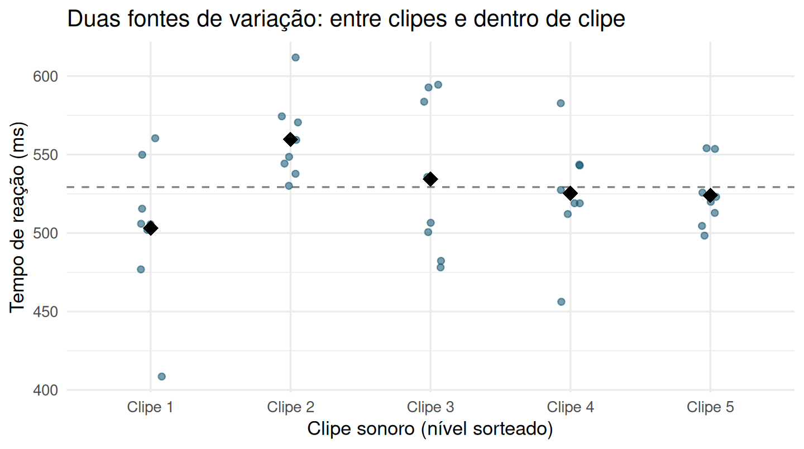

3.4 O modelo de efeitos aleatórios
Até aqui, os níveis do fator eram os níveis de interesse per se: o pesquisador queria comparar justamente aquelas três condições de distração, ou justamente aqueles quatro probióticos. Há situações, porém, em que os níveis usados no experimento são apenas uma amostra aleatória de uma população maior e muito mais numerosa de níveis possíveis — e o interesse não está nos níveis específicos sorteados, mas em quanto a fonte de variação que eles representam contribui para a variabilidade total da resposta, de modo a generalizar para toda a população de níveis.
Voltando ao experimento de distração sonora: existe, na prática, uma população enorme de possíveis sons de distração (sirenes, conversas, tráfego, música...). Em vez de fixar um único som, o pesquisador sorteia aleatoriamente 5 clipes sonoros de um banco com centenas de gravações e testa cada clipe em 8 novos voluntários (sorteados independentemente entre clipes). A pergunta não é "o clipe 3 difere do clipe 1?" — não há interesse nesses clipes específicos — mas sim "o tipo de som usado, de modo geral, contribui de forma relevante para a variabilidade do tempo de reação?".
3.4.1 Quando os tratamentos são uma amostra aleatória
O modelo tem a mesma forma algébrica de antes,
\[ Y_{ij} = \mu + \tau_i + \varepsilon_{ij}, \qquad i = 1,\ldots,t; \; j = 1,\ldots,n, \]
mas agora \(\tau_i \overset{iid}{\sim} N(0, \sigma_\tau^2)\) é aleatório (não mais sujeito à restrição de soma zero), independente de \(\varepsilon_{ij} \overset{iid}{\sim} N(0,\sigma^2)\). Consequentemente, \(\text{Var}(Y_{ij}) = \sigma_\tau^2 + \sigma^2\), e observações da mesma UE de nível \(i\) (aqui, do mesmo clipe sonoro) são correlacionadas: \(\text{Corr}(Y_{ij}, Y_{ij'}) = \sigma_\tau^2/(\sigma_\tau^2+\sigma^2)\) para \(j \neq j'\) — o coeficiente de correlação intraclasse (ICC). Em notação matricial, isso é a mesma estrutura de blocos de simetria composta \(\mathbf{V}=\sigma_\tau^2\mathbf{Z}\mathbf{Z}'+\sigma^2\mathbf{I}_N\) da Seção 3.3.1, agora com \(\mathbf{Z}\) indicando o nível sorteado (o clipe), não a UE — sinal de que submuestreo e efeitos aleatórios são duas instâncias do mesmo fenômeno estatístico: observações que compartilham um rótulo aleatório deixam de ser independentes. A hipótese de interesse muda de “as médias são iguais?” para “a variância entre níveis é nula?”:
\[ H_0: \sigma_\tau^2 = 0 \quad \text{vs.} \quad H_1: \sigma_\tau^2 > 0. \]
3.4.2 ANOVA e componentes de variância
A tabela de ANOVA é calculada exatamente como no modelo de efeitos fixos (as somas de quadrados não mudam — a diferença está só na interpretação e nas esperanças de quadrados médios):
| Fonte de variação | G.l. | E[QM] |
|---|---|---|
| Entre níveis | \(t-1\) | \(\sigma^2 + n\sigma_\tau^2\) |
| Erro | \(t(n-1)\) | \(\sigma^2\) |
| Total | \(tn-1\) |
O teste \(F = MS_{\text{Entre}}/MS_E\) é numericamente idêntico ao do modelo fixo, mas a estimativa de interesse passa a ser o componente de variância \(\sigma_\tau^2\), obtido pelo método dos momentos a partir da tabela de ANOVA (método de Henderson tipo I):
\[ \hat\sigma^2 = MS_E, \qquad \hat\sigma_\tau^2 = \frac{MS_{\text{Entre}} - MS_E}{n}. \]
set.seed(77)
t_niveis <- 5; n_por_nivel <- 8
efeito_clipe <- rnorm(t_niveis, 0, sqrt(300))
dados_clipe <- tibble(
clipe = factor(rep(paste("Clipe", 1:t_niveis), each = n_por_nivel)),
efeito = rep(efeito_clipe, each = n_por_nivel), # efeito ALEATÓRIO do clipe sorteado
tempo_reacao = 520 + efeito + rnorm(t_niveis * n_por_nivel, 0, sqrt(1200))
)
glimpse(dados_clipe)## Rows: 40
## Columns: 3
## $ clipe <fct> Clipe 1, Clipe 1, Clipe 1, Clipe 1, Clipe 1, Clipe 1, Cli…
## $ efeito <dbl> -9.520009, -9.520009, -9.520009, -9.520009, -9.520009, -9…
## $ tempo_reacao <dbl> 549.8946, 476.8590, 505.9134, 515.5454, 560.4078, 408.587…# UE = voluntário (8 por clipe, sem submuestreo); "clipe" é o nível sorteado da população de sons
modelo_clipe <- aov(tempo_reacao ~ clipe, data = dados_clipe)
summary(modelo_clipe)## Df Sum Sq Mean Sq F value Pr(>F)
## clipe 4 13379 3345 2.377 0.0706 .
## Residuals 35 49247 1407
## ---
## Signif. codes: 0 '***' 0.001 '**' 0.01 '*' 0.05 '.' 0.1 ' ' 1tab_cl <- summary(modelo_clipe)[[1]]
MS_entre <- tab_cl[["Mean Sq"]][1]; MS_erro <- tab_cl[["Mean Sq"]][2]
sigma2_tau_hat <- (MS_entre - MS_erro) / n_por_nivel
tibble(
Componente = c("Entre clipes (sigma_tau^2)", "Erro (sigma^2)", "ICC"),
Estimativa = c(sigma2_tau_hat, MS_erro, sigma2_tau_hat / (sigma2_tau_hat + MS_erro))
) %>%
kable(digits = 3, caption = "Componentes de variância estimados") %>%
kable_styling(full_width = FALSE)| Componente | Estimativa |
|---|---|
| Entre clipes (sigma_tau^2) | 242.222 |
| Erro (sigma^2) | 1407.053 |
| ICC | 0.147 |
O ICC estimado de cerca de 0,15 sugere que a identidade do clipe sonoro explica uma fração modesta, mas não desprezível, da variabilidade do tempo de reação — informação que o modelo de efeitos fixos, ao tratar os cinco clipes como se fossem os únicos de interesse, simplesmente não poderia fornecer.

Figure 3.9: Tempo de reação por clipe sonoro (pontos), com a média de cada clipe (losango preto). A dispersão dos losangos em torno da média geral estima sigma_tau^2 (entre clipes); a dispersão dos pontos em torno do próprio losango estima sigma^2 (dentro de clipe).
A linha tracejada marca a média geral. Os losangos (médias de cada clipe) se espalham em torno dela — essa dispersão entre losangos é o que \(\hat\sigma_\tau^2\) mede — enquanto os pontos individuais (voluntários) se espalham em torno do losango do seu próprio clipe — a dispersão dentro de cada coluna, que \(\hat\sigma^2\) mede. Note que nenhum clipe específico se destaca de forma sistemática: é exatamente esse padrão, em que os cinco níveis observados parecem uma amostra de uma população maior de clipes possíveis, que justifica tratá-los como efeitos aleatórios em vez de fixos.
3.4.3 Tamanho de amostra no modelo de efeitos aleatórios
O planejamento de \(n\) (réplicas por nível) no modelo aleatório não usa a distribuição \(F\) não central da Seção 3.2.6 — em vez disso, sob \(H_1\),
\[ \frac{F}{1 + n\gamma} \sim F_{t-1,\,t(n-1)} \quad \text{(central)}, \qquad \gamma = \frac{\sigma_\tau^2}{\sigma^2}, \]
de modo que o poder do teste, para um dado \(\gamma\) (a razão de variâncias que se deseja detectar) e um número de níveis \(t\) fixado de antemão, é
\[ \text{Poder}(n) = P\!\left(F_{t-1,\,t(n-1)} > \frac{F_{\alpha,\,t-1,\,t(n-1)}}{1+n\gamma}\right). \]
gamma_alvo <- 300 / 1200 # sigma_tau^2 / sigma^2 assumido no planejamento
t_niveis <- 5
alpha <- 0.05
poder_n <- function(n) {
Fc <- qf(1 - alpha, t_niveis - 1, t_niveis * (n - 1))
pf(Fc / (1 + n * gamma_alvo), t_niveis - 1, t_niveis * (n - 1), lower.tail = FALSE)
}
tibble(n = c(8, 10, 15, 20, 25, 30)) %>%
mutate(poder = map_dbl(n, poder_n)) %>%
kable(digits = 3, caption = "Poder para detectar gamma = 0,25 com t = 5 níveis") %>%
kable_styling(full_width = FALSE)| n | poder |
|---|---|
| 8 | 0.486 |
| 10 | 0.572 |
| 15 | 0.716 |
| 20 | 0.800 |
| 25 | 0.852 |
| 30 | 0.886 |
Com apenas 8 réplicas por clipe (o desenho do exemplo), o poder para detectar \(\gamma=0{,}25\) é de apenas cerca de 0,49 — seriam necessárias por volta de 20 réplicas por nível para atingir poder de 0,80. O modelo aleatório costuma exigir mais réplicas por nível do que o modelo fixo para o mesmo poder nominal, porque a variabilidade entre níveis (\(\sigma_\tau^2\)) se soma à incerteza da estimativa, em vez de ser um efeito fixo perfeitamente estimável.